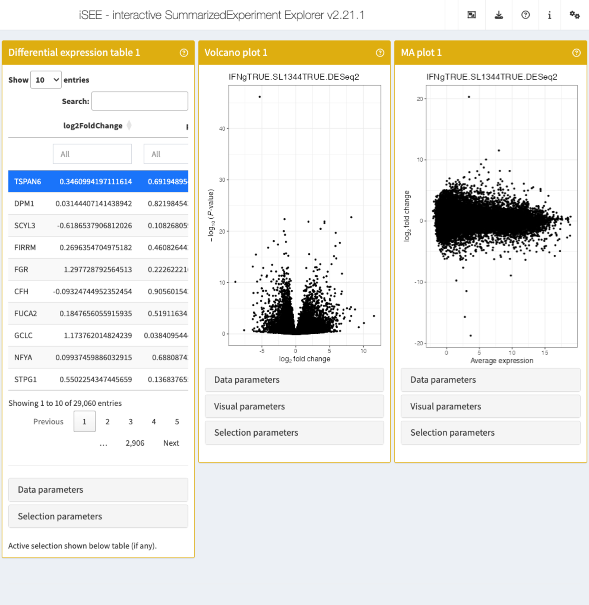
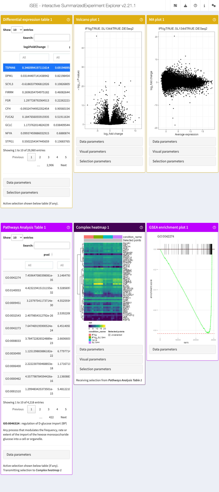
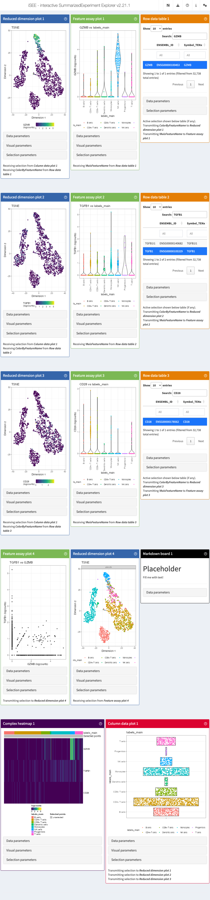
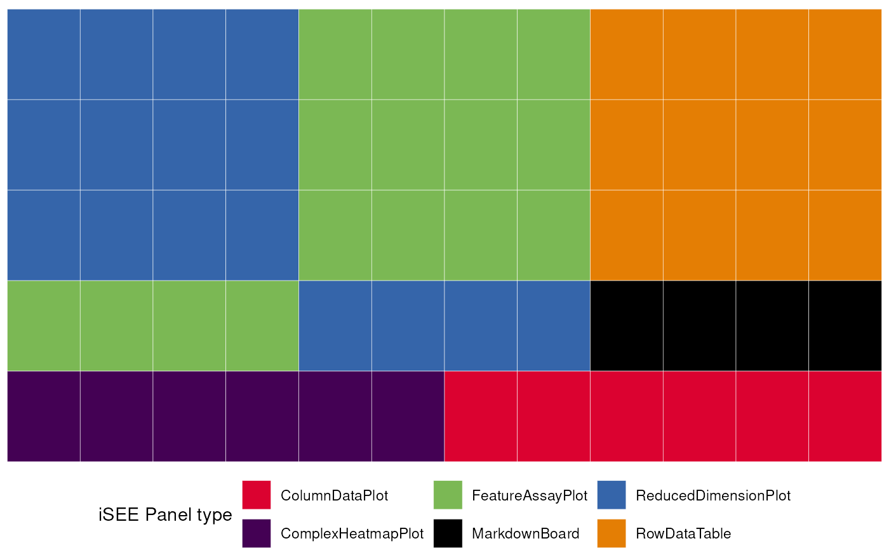
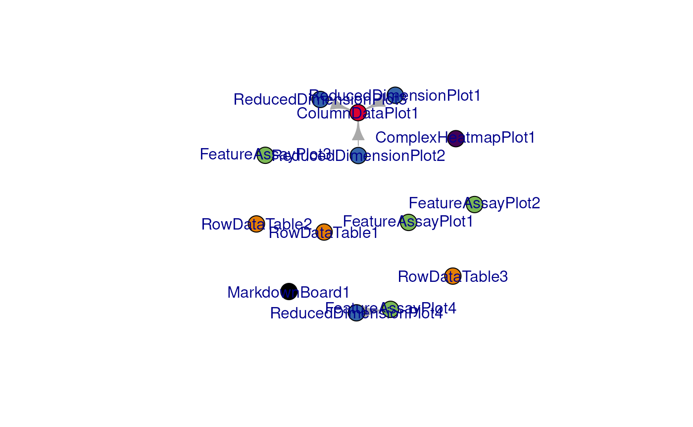
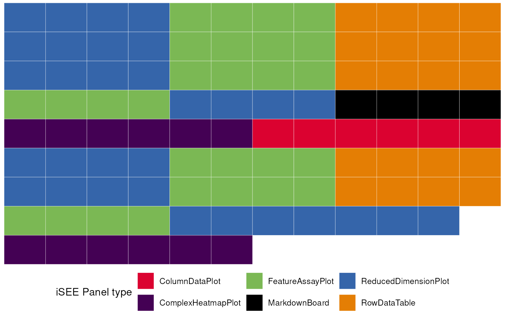
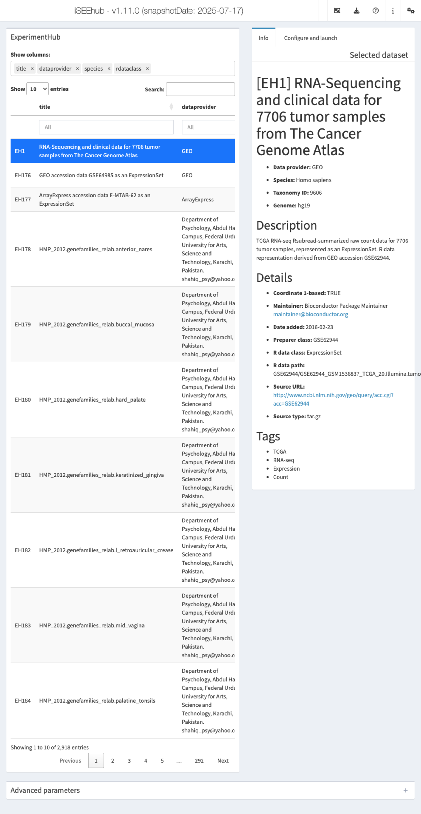
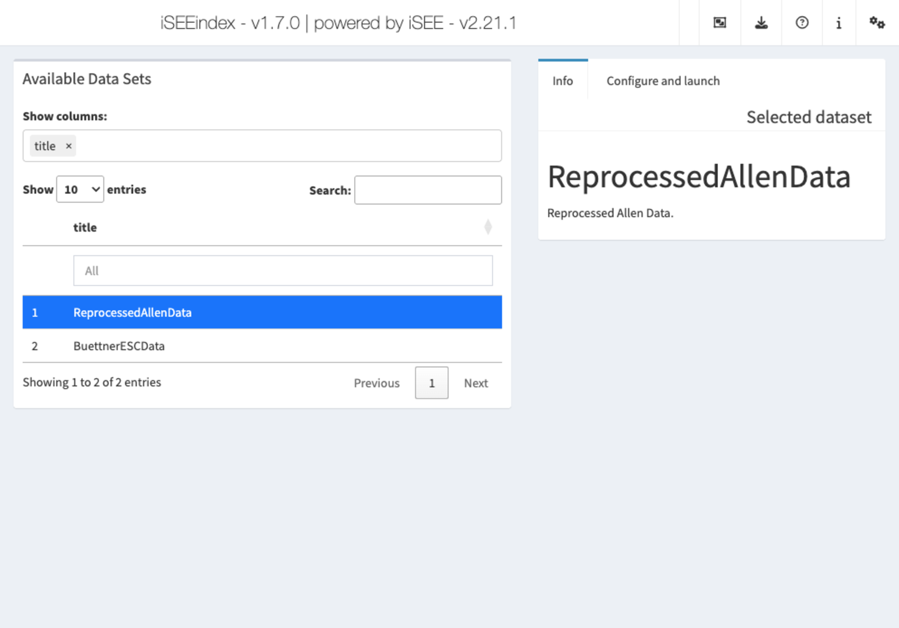
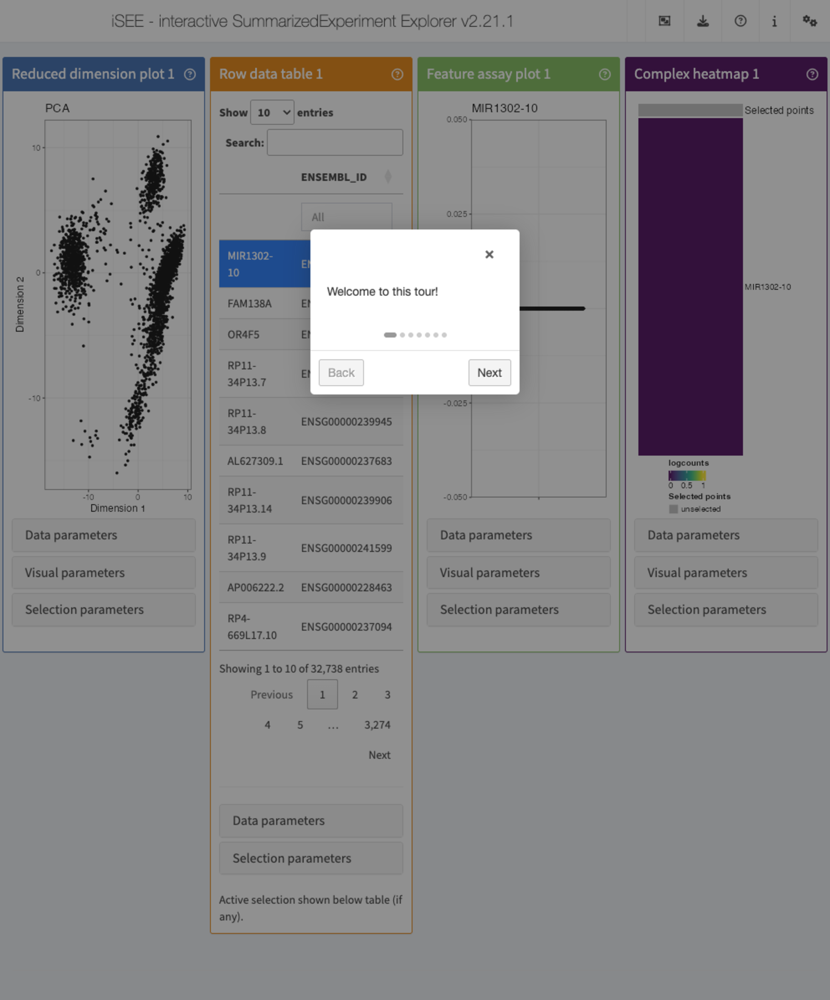

Bonus content
Federico Marini1, Kevin Rue-Albrecht2, Charlotte soneson3, Aaron Lun4, Najla Abassi5
Source:vignettes/d04_bonus_content.Rmd
d04_bonus_content.Rmd
Introduction
This vignette contains some additional examples of things that can be
done using iSEE, going beyond the basic application
interface.
iSEEde and iSEEpathways
iSEEde and iSEEpathways and ideal companion packages for exploring differential expression results in (e.g.) bulk RNA-seq data.
We will use the macrophage dataset (derived from the
work of (Alasoo et al. 2018)), for which
we have already run a differential expression analysis using
DESeq2 (Love, Huber, and Anders
2014). The processed dataset is provided with the workshop
package.
macrophage_location <- system.file("datasets", "sce_macrophage_readytouse.RDS",
package = "iUSEiSEE")
macrophage_location
#> [1] "/tmp/Rtmp7gC9Da/temp_libpath66ef12b04acf/iUSEiSEE/datasets/sce_macrophage_readytouse.RDS"
sce_macrophage <- readRDS(macrophage_location)
library("iSEE")
library("iSEEde")
library("iSEEpathways")
library("AnnotationDbi")
library("org.Hs.eg.db")
#>
library("GO.db")
#> iSEEde and
iSEEpathways
are two new Bioconductor packages that provide iSEE panels
specifically aimed towards exploration of differential expression and
pathway analysis results. More precisely, iSEEde
provides the VolcanoPlot, MAPlot,
LogFCLogFCPlot and DETable panels. These
panels can be configured to extract data that was added via the
embedContrastResults() function above. Let’s look at an
example:
app <- iSEE(sce_macrophage, initial = list(
iSEEde::DETable(
ContrastName = "IFNgTRUE.SL1344TRUE.DESeq2",
HiddenColumns = c("baseMean", "lfcSE", "stat")
),
iSEEde::VolcanoPlot(ContrastName = "IFNgTRUE.SL1344TRUE.DESeq2"),
iSEEde::MAPlot(ContrastName = "IFNgTRUE.SL1344TRUE.DESeq2")
))
Note how it is easy to switch to a different contrast in any of the panels.
app <- iSEE(sce_macrophage, initial = list(
iSEEde::DETable(
ContrastName = "IFNgTRUE.SL1344TRUE.DESeq2",
HiddenColumns = c("baseMean", "lfcSE", "stat")
),
iSEEde::VolcanoPlot(ContrastName = "IFNgTRUE.SL1344TRUE.DESeq2"),
iSEEde::MAPlot(ContrastName = "IFNgTRUE.SL1344TRUE.DESeq2"),
PathwaysTable(
ResultName = "IFNgTRUE.SL1344TRUE.limma.fgsea",
Selected = "GO:0046324"
),
ComplexHeatmapPlot(
RowSelectionSource = "PathwaysTable1",
CustomRows = FALSE, ColumnData = "condition_name",
ClusterRows = TRUE, Assay = "vst"
),
FgseaEnrichmentPlot(
ResultName = "IFNgTRUE.SL1344TRUE.limma.fgsea",
PathwayId = "GO:0046324"
)
))
iSEEfier
Let’s say we are interested in visualizing the expression of a list of specific marker genes in one view, or maybe we created different initial states separately, but would like to visualize them in the same instance. As we previously learned, we can do a lot of these tasks by running the command:
# don't run
iSEE(sce)Then, add/remove the panels to our need. This can involve multiple
steps (selecting the gene of interest, color by a specific
colData…), or probably even write multiple lines of code.
For that we can use the iSEEfier
package, which streamlines the process of starting (or if you will,
firing up) an iSEE instance with a small chunk of code,
avoiding the tedious way of setting up every iSEE panel
individually.
In this section, we will illustrate a simple example of how to use
iSEEfier.
We will use the same pbmc3k data we worked with during this
workshop.
We start by loading the data:
library("iSEEfier")
# import data
sce <- readRDS(
file = system.file("datasets", "sce_pbmc3k.RDS", package = "iUSEiSEE")
)
sce
#> class: SingleCellExperiment
#> dim: 32738 2643
#> metadata(0):
#> assays(2): counts logcounts
#> rownames(32738): MIR1302-10 FAM138A ... AC002321.2 AC002321.1
#> rowData names(19): ENSEMBL_ID Symbol_TENx ... FDR_cluster11
#> FDR_cluster12
#> colnames(2643): Cell1 Cell2 ... Cell2699 Cell2700
#> colData names(24): Sample Barcode ... labels_ont cell_ontology_labels
#> reducedDimNames(3): PCA TSNE UMAP
#> mainExpName: NULL
#> altExpNames(0):For example, we can be interested in visualizing the expression of GZMB, TGFB, and CD28 genes all at once. We start by providing a couple of parameters:
# define the list of genes
feature_list_1 <- c("GZMB", "TGFB1", "CD28")
# define the cluster/cell type
cluster_1 <- "labels_main"Now we can pass these parameters into iSEEinit() to
create a customized initial configuration:
# create an initial state with iSEEinit
initial_1 <- iSEEinit(sce,
features = feature_list_1,
clusters = cluster_1,
add_markdown_panel = TRUE)The rest can be as easy as passing this initial to the
iSEE() call:
app <- iSEE(sce, initial = initial_1)This is how it would look like:

While we are visualizing the expression of these genes, we might want
to take some notes (gene X is more expressed in a certain cell
type/cluster than some others, maybe we are trying to annotate the cells
ourselves if the annotation wasn’t available…).
For this, we used the argument add_markdown_panel = TRUE.
It will display a MarkdownBoard panel where we can note our
observations without leaving the app.
We can check the initial’s content, or how the included panels are
linked between each other without running the app with
view_initial_tiles() and
view_initial_network():
# display a graphical representation of the initial configuration, where the panels are identified by their corresponding colors
view_initial_tiles(initial = initial_1)
# display a network visualization for the panels
view_initial_network(initial_1, plot_format = "igraph")
#> IGRAPH b7bd62a DN-- 14 4 --
#> + attr: name (v/c), color (v/c)
#> + edges from b7bd62a (vertex names):
#> [1] ReducedDimensionPlot1->ColumnDataPlot1
#> [2] ReducedDimensionPlot2->ColumnDataPlot1
#> [3] ReducedDimensionPlot3->ColumnDataPlot1
#> [4] ReducedDimensionPlot4->FeatureAssayPlot4Another alternative for network visualization would use the
interactive widget provided by visNetwork:
view_initial_network(initial_1, plot_format = "visNetwork")
#> IGRAPH 04159f5 DN-- 14 4 --
#> + attr: name (v/c), color (v/c)
#> + edges from 04159f5 (vertex names):
#> [1] ReducedDimensionPlot1->ColumnDataPlot1
#> [2] ReducedDimensionPlot2->ColumnDataPlot1
#> [3] ReducedDimensionPlot3->ColumnDataPlot1
#> [4] ReducedDimensionPlot4->FeatureAssayPlot4It is also possible to combine multiple initials into one:
feature_list_2 <- c("CD74", "CD79B")
initial_2 <- iSEEinit(sce,
features = feature_list_2,
clusters = cluster_1)
merged_config <- glue_initials(initial_1, initial_2)
#> Merging together 2 `initial` configuration objects...
#> Combining sets of 14, 10 different panels.
#>
#> Dropping 1 of the original list of 24 (detected as duplicated entries)
#>
#> Some names of the panels were specified by the same name, but this situation can be handled at runtime by iSEE
#> (This is just a non-critical message)
#>
#> Returning an `initial` configuration including 23 different panels. Enjoy!
#> If you want to obtain a preview of the panels configuration, you can call `view_initial_tiles()` on the output of this function
# check out the content of merged_config
view_initial_tiles(initial = merged_config)
?iSEEfier is always your friend whenever you need
further documentation on the package/a certain function and how to use
it.
iSEEhub & iSEEindex
iSEEhub: iSEEing the ExperimentHub datasets
The iSEEhub package provides a custom landing page for an iSEE application interfacing with the Bioconductor ExperimentHub. The landing page allows users to browse the ExperimentHub, select a data set, download and cache it, and import it directly into an iSEE app.
library("iSEE")
library("iSEEhub")
#> Loading required package: ExperimentHub
#> Loading required package: AnnotationHub
#> Loading required package: BiocFileCache
#> Loading required package: dbplyr
#>
#> Attaching package: 'AnnotationHub'
#> The following object is masked from 'package:Biobase':
#>
#> cache
ehub <- ExperimentHub()
app <- iSEEhub(ehub)
iSEEindex: one instance of iSEE to explore them
all
iSEEindex
provides an interface to any collection of data sets
within a single iSEE web-application.
The main functionality of this package is to define a custom landing
page allowing app maintainers to list a custom collection of data sets
that users can select from and directly load objects into an iSEE web
application. To see how to configure such an app, we will create a small
example:
library("iSEE")
library("iSEEindex")
bfc <- BiocFileCache(cache = tempdir())
dataset_fun <- function() {
x <- yaml::read_yaml(system.file(package = "iSEEindex", "example.yaml"))
x$datasets
}
initial_fun <- function() {
x <- yaml::read_yaml(system.file(package = "iSEEindex", "example.yaml"))
x$initial
}
app <- iSEEindex(bfc, dataset_fun, initial_fun)
A more elaborate example (referring to the work in (Rigby et al. 2023)) is available at https://rehwinkellab.shinyapps.io/ifnresource/. The source can be found at https://github.com/kevinrue/IFNresource.
Potential use cases can include:
- An app to present and explore the different datasets in your next publication
- An app to explore collection of datasets collaboratively, in consortium-like initiatives
- An app to mirror and enhance the content of e.g. the cellxgene data portal
Tours: help and storytelling
Tours can be an essential tool to satisfy two needs:
- Helping users to navigate the UI
- Telling a story on an existing configuration
A simple example can be demonstrated with this configuration:
sce_location <- system.file("datasets", "sce_pbmc3k.RDS", package = "iUSEiSEE")
sce_location
#> [1] "/tmp/Rtmp7gC9Da/temp_libpath66ef12b04acf/iUSEiSEE/datasets/sce_pbmc3k.RDS"
sce <- readRDS(sce_location)
initial_for_tour <- list(
ReducedDimensionPlot(PanelWidth = 3L),
RowDataTable(PanelWidth = 3L),
FeatureAssayPlot(PanelWidth = 3L),
ComplexHeatmapPlot(PanelWidth = 3L)
)This next chunk defines the steps of the tour,
specified by an anchoring point (element) and the content
of that step (intro).
tour <- data.frame(
element = c(
"#Welcome",
"#ReducedDimensionPlot1",
"#RowDataTable1",
"#ComplexHeatmapPlot1",
"#FeatureAssayPlot1",
"#ReducedDimensionPlot1",
"#Conclusion"),
intro = c(
"Welcome to this tour!",
"This is the a reduced dimension plot",
"and this is a table",
"Why not a heatmap?",
"... and now we look at one individual feature.",
"Back to the a reduced dimension plot...",
"Thank you for taking this tour!"),
stringsAsFactors = FALSE
)
app <- iSEE(sce, initial = initial_for_tour, tour = tour)
Interoperability
As we have seen throughout this workshop, iSEE works
on SummarizedExperiment objects, or derivatives thereof.
However, especially if you are working with single-cell data you may
already have your dataset available in another format (such as a
Seurat object or an AnnData object). To use
iSEE on these objects, they first have to be converted to
SingleCellExperiment objects. Fortunately, there are good
packages available to perform this conversion. We exemplify this below,
using data downloaded from https://zenodo.org/records/10084595 (if you want to
follow along, download the data and unpack in a folder named
datasets in the current working directory).
From Seurat
library("Seurat")
seurat_object <- readRDS("datasets/seurat_pbmc3k.RDS")
sce_from_seurat <- Seurat::as.SingleCellExperiment(
seurat_object
)
sce_from_seurat
iSEE(sce_from_seurat)From AnnData
library("zellkonverter")
sce_from_anndata <- zellkonverter::readH5AD(file = "datasets/anndata_pbmc3k.h5ad")
sce_from_anndata
iSEE(sce_from_anndata)Session info
Session info
sessionInfo()
#> R version 4.5.1 (2025-06-13)
#> Platform: x86_64-pc-linux-gnu
#> Running under: Ubuntu 24.04.2 LTS
#>
#> Matrix products: default
#> BLAS: /usr/lib/x86_64-linux-gnu/openblas-pthread/libblas.so.3
#> LAPACK: /usr/lib/x86_64-linux-gnu/openblas-pthread/libopenblasp-r0.3.26.so; LAPACK version 3.12.0
#>
#> locale:
#> [1] LC_CTYPE=en_US.UTF-8 LC_NUMERIC=C
#> [3] LC_TIME=en_US.UTF-8 LC_COLLATE=en_US.UTF-8
#> [5] LC_MONETARY=en_US.UTF-8 LC_MESSAGES=en_US.UTF-8
#> [7] LC_PAPER=en_US.UTF-8 LC_NAME=C
#> [9] LC_ADDRESS=C LC_TELEPHONE=C
#> [11] LC_MEASUREMENT=en_US.UTF-8 LC_IDENTIFICATION=C
#>
#> time zone: Etc/UTC
#> tzcode source: system (glibc)
#>
#> attached base packages:
#> [1] stats4 stats graphics grDevices utils datasets methods
#> [8] base
#>
#> other attached packages:
#> [1] iSEEindex_1.6.0 iSEEhub_1.10.0
#> [3] ExperimentHub_2.16.0 AnnotationHub_3.16.0
#> [5] BiocFileCache_2.16.0 dbplyr_2.5.0
#> [7] iSEEfier_1.4.0 GO.db_3.21.0
#> [9] org.Hs.eg.db_3.21.0 AnnotationDbi_1.70.0
#> [11] iSEEpathways_1.6.0 iSEEde_1.6.0
#> [13] iSEE_2.20.0 SingleCellExperiment_1.30.1
#> [15] SummarizedExperiment_1.38.1 Biobase_2.68.0
#> [17] GenomicRanges_1.60.0 GenomeInfoDb_1.44.0
#> [19] IRanges_2.42.0 S4Vectors_0.46.0
#> [21] BiocGenerics_0.54.0 generics_0.1.4
#> [23] MatrixGenerics_1.20.0 matrixStats_1.5.0
#> [25] BiocStyle_2.36.0
#>
#> loaded via a namespace (and not attached):
#> [1] RColorBrewer_1.1-3 jsonlite_2.0.0 shape_1.4.6.1
#> [4] magrittr_2.0.3 farver_2.1.2 rmarkdown_2.29
#> [7] GlobalOptions_0.1.2 fs_1.6.6 ragg_1.4.0
#> [10] vctrs_0.6.5 memoise_2.0.1 htmltools_0.5.8.1
#> [13] S4Arrays_1.8.1 BiocBaseUtils_1.10.0 curl_6.4.0
#> [16] SparseArray_1.8.0 sass_0.4.10 bslib_0.9.0
#> [19] htmlwidgets_1.6.4 desc_1.4.3 fontawesome_0.5.3
#> [22] httr2_1.2.0 listviewer_4.0.0 cachem_1.1.0
#> [25] igraph_2.1.4 mime_0.13 lifecycle_1.0.4
#> [28] iterators_1.0.14 pkgconfig_2.0.3 colourpicker_1.3.0
#> [31] Matrix_1.7-3 R6_2.6.1 fastmap_1.2.0
#> [34] GenomeInfoDbData_1.2.14 shiny_1.11.1 clue_0.3-66
#> [37] digest_0.6.37 colorspace_2.1-1 paws.storage_0.9.0
#> [40] DESeq2_1.48.1 textshaping_1.0.1 RSQLite_2.4.2
#> [43] filelock_1.0.3 urltools_1.7.3.1 httr_1.4.7
#> [46] abind_1.4-8 mgcv_1.9-3 compiler_4.5.1
#> [49] bit64_4.6.0-1 withr_3.0.2 doParallel_1.0.17
#> [52] BiocParallel_1.42.1 DBI_1.2.3 shinyAce_0.4.4
#> [55] hexbin_1.28.5 rappdirs_0.3.3 DelayedArray_0.34.1
#> [58] rjson_0.2.23 tools_4.5.1 vipor_0.4.7
#> [61] httpuv_1.6.16 glue_1.8.0 nlme_3.1-168
#> [64] promises_1.3.3 grid_4.5.1 cluster_2.1.8.1
#> [67] gtable_0.3.6 XVector_0.48.0 stringr_1.5.1
#> [70] BiocVersion_3.21.1 ggrepel_0.9.6 foreach_1.5.2
#> [73] pillar_1.11.0 limma_3.64.1 later_1.4.2
#> [76] rintrojs_0.3.4 circlize_0.4.16 splines_4.5.1
#> [79] dplyr_1.1.4 lattice_0.22-7 bit_4.6.0
#> [82] paws.common_0.8.4 tidyselect_1.2.1 ComplexHeatmap_2.24.1
#> [85] locfit_1.5-9.12 Biostrings_2.76.0 miniUI_0.1.2
#> [88] knitr_1.50 edgeR_4.6.3 xfun_0.52
#> [91] shinydashboard_0.7.3 statmod_1.5.0 iSEEhex_1.10.0
#> [94] DT_0.33 stringi_1.8.7 visNetwork_2.1.2
#> [97] UCSC.utils_1.4.0 yaml_2.3.10 shinyWidgets_0.9.0
#> [100] evaluate_1.0.4 codetools_0.2-20 tibble_3.3.0
#> [103] BiocManager_1.30.26 cli_3.6.5 xtable_1.8-4
#> [106] systemfonts_1.2.3 jquerylib_0.1.4 iSEEu_1.20.0
#> [109] Rcpp_1.1.0 triebeard_0.4.1 png_0.1-8
#> [112] parallel_4.5.1 pkgdown_2.1.3 ggplot2_3.5.2
#> [115] blob_1.2.4 viridisLite_0.4.2 scales_1.4.0
#> [118] purrr_1.1.0 crayon_1.5.3 GetoptLong_1.0.5
#> [121] rlang_1.1.6 KEGGREST_1.48.1 shinyjs_2.1.0